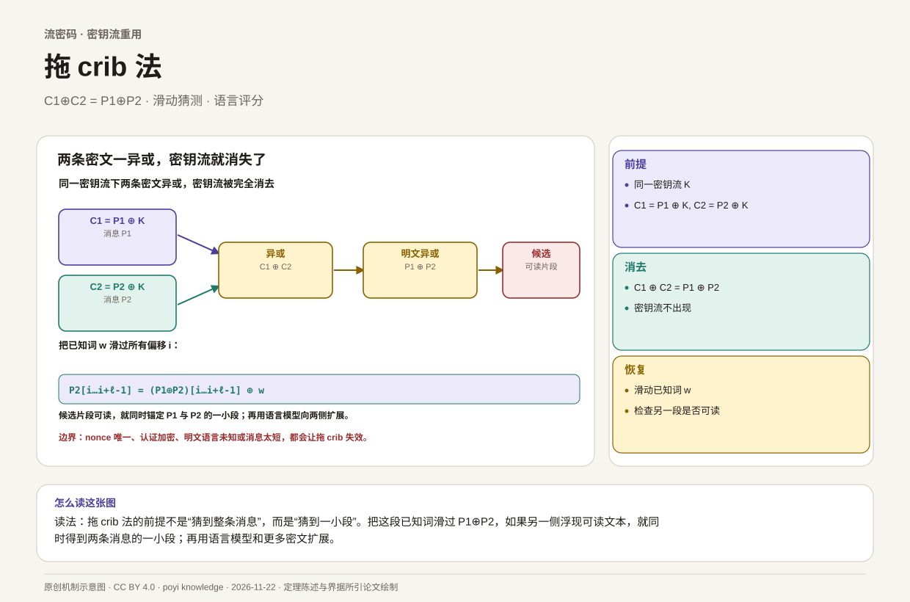
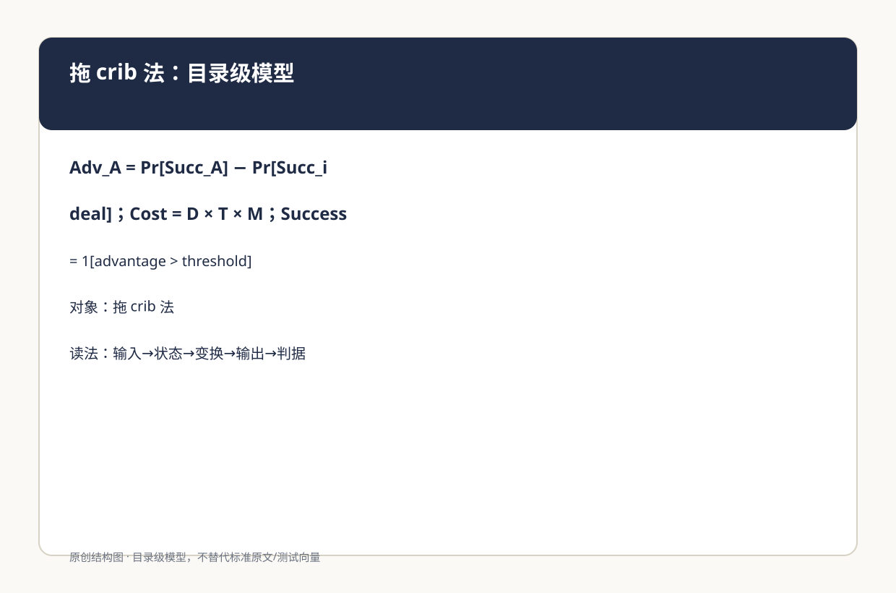

原理与机制
攻击：拖crib法（Crib Dragging）。### 密钥流重用的代数事实
设两条消息 P1、P2 使用同一条密钥流 K：
C1 = P1 ⊕ K，C2 = P2 ⊕ K。C1 ⊕ C2 = (P1 ⊕ K) ⊕ (P2 ⊕ K) = P1 ⊕ P2。密钥流 K 被完全消去，攻击者得到两条明文的异或。它仍然不是明文，但已经把“两条独立的加密消息”变成一个密切相关的问题。### 拖 crib 的基本操作
若攻击者猜 P1 在偏移 i 处含有已知词 w（长度为 ℓ），就把 w 与 (C1⊕C2)[i…i+ℓ-1] 异或，得到 P2 在对应位置的候选片段：
P2[i…i+ℓ-1] = (C1⊕C2)[i…i+ℓ-1] ⊕ w。如果候选片段可读，说明 w 很可能在 P1 中，同时 P2 的这一段也被恢复。把 w 滑过所有偏移，收集可读候选；再用语言模型、词表和更多密文交叉验证。### 从手工猜测到语言模型
手工拖 crib 依赖攻击者对明文的猜测。自动化方法把候选文本按语言模型打分：对候选字符序列计算 Σ log Pr(c_j | 上下文)，保留高分路径；再用动态规划或束搜索扩展。Mason 等的论文正是把这一过程系统化，报告在真实数据上可达到很高的字符准确率。

为什么重要
一次性密码本的安全性依赖密钥只使用一次。两条消息共用 K 后，K 不再是未知量，而是被异或消去的公共项。攻击者不需要恢复 K，只需要利用两条明文的语言结构。### 为什么 crib 不必很长
一段常见问候、HTML 标签、协议头或固定字段就足以作为锚点。候选片段可读性把“猜测是否正确”变成可检验的信号；一旦锚定，明文的两侧可以用语言模型继续扩展。### 对协议设计的含义
nonce/IV 的唯一性是流密码的生命线。SIV、GCM 的 nonce 管理、随机数生成和密钥轮换都必须保证同一密钥下不重复使用同一 nonce；否则 confidentiality 和 authenticity 可能一起失效。
应用与实例
1.确认两条或多条密文使用同一密钥流：检查 nonce、IV、计数器或协议实现。2.计算任意两条密文的异或，得到 P1⊕P2。3.选择可能的 crib：语言词、HTML 标签、协议头、已知文件名或固定错误消息。4.把 crib 滑过所有偏移，收集另一侧可读的候选；用词表、n-gram 或语言模型排序。5.用恢复的片段扩展相邻明文，并用第三条密文交叉验证；最后用重新加密验证假设。6.报告只能写“在假设同一密钥流下恢复的候选明文”，不能把候选当成已验证的原文。### 典型场景
一次性密码本的 nonce 重用、WEP 的 IV 重用、流密码实现错误、CTF 中的 many-time pad、以及任何把计数器/随机数误用为固定值的协议。

边界与攻击面
1.密钥流从未重用：每条消息使用独立随机密钥或唯一 nonce，异或不出 P1⊕P2。2.使用认证加密且 nonce 管理正确：密文被篡改会被拒绝，重用也会被协议检测。3.明文语言未知或高度随机：crib 无法锚定，语言模型评分失效。4.消息太短或 crib 不在任何消息中：滑动窗口没有可读候选。5.明文经过压缩/加密/编码：候选片段不呈现自然语言结构。6.只恢复片段不等于恢复全文：需要更多密文、语言模型和外部约束。拖 crib 法是已知明文/猜测明文攻击，不是万能解密器；它利用的是密钥流重用，而不是算法本身的代数弱点。报告必须说明重用证据、crib 来源和候选验证方法。
历史与背景
密钥流重用的危险在一次性密码本的理论中早已明确：同一密钥加密两条消息，异或就消去密钥。传统密码分析依赖分析者猜测常见词或协议字段，再手工滑动比对。2006 年，Mason、Watkins、Eisner 与 Stubblefield 在 CCS 上发表自动化方法：把两条密文的异或当作约束，用统计语言模型和动态规划恢复最可能的明文对，并在真实数据上报告高准确率。这把“拖 crib”从手工技巧推进为可重复的语言模型攻击。### 今天的教训
WEP 的 IV 重用、流密码 nonce 管理错误和 CTF 的 many-time pad 反复说明：密钥流唯一性不是实现细节，而是安全定义的一部分。
逐步示例与核验
形式模型与复算步骤
[\mathrm{Adv}^{\mathrm{attack}}_A(\lambda)=\Pr[\mathrm{Game}_A(\lambda)=1]-\frac12]
拖crib法的公开参数、密钥/随机数与消息；变量说明：λ 安全参数；Game 把攻击目标写成挑战-响应游戏。1.定义挑战与获胜条件。2.给攻击者 oracle 访问。3.计算优势并与目标界比较。边界：公式只覆盖已登记的参数与假设；参数取值、标准版本和实现细节仍以来源为准。
参考出处
- Wikipedia search entry for 拖crib法. https://zh.wikipedia.org/w/index.php?search=%E6%8B%96crib%E6%B3%95
- Handbook of Applied Cryptography (Menezes, van Oorschot, Vanstone). https://www.cacr.math.uwaterloo.ca/hac/